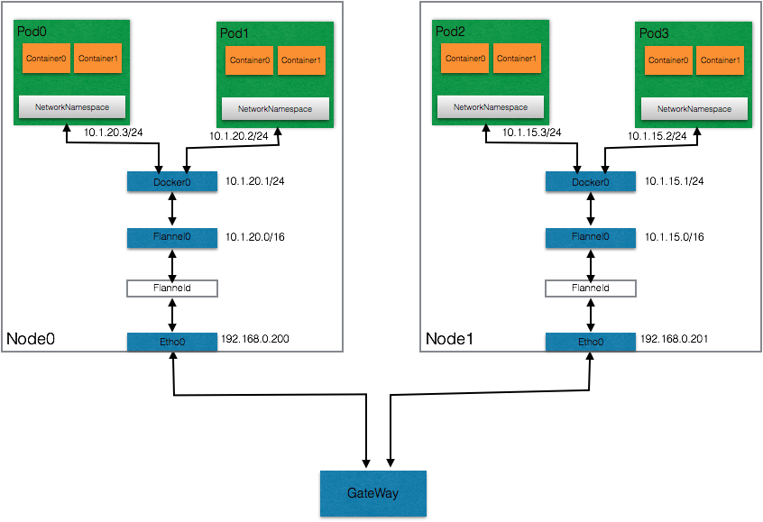

本文主要剖析kubernetes中网络模型，详细介绍pod之间的通信流程。
网络模型概况
kubernetes对网络的要求
- 所有的容器都可以在不用NAT的方式下同别的容器通信
- 所有容器节点都可以在不用NAT的方式下同所有容器通信
- 容器的地址和别人看到的地址是同一个地址
kubernetes的网络场景
容器间直接通信
同一个pod中，不通容器共享一个网络命名空间，共享同一个Linux协议栈，可以直接通过localhost通信。
同一个Node上pod间的通信
同一个Node内，不同的Pod都有一个全局IP，可以直接通过Pod的IP进行通信。Pod地址和docker0在同一个网段
不同Node上的pod间通信
docker0网桥与宿主机网卡是两个完全不同的IP网段，并且Node之间的通信只能通过宿主机的物理网卡进行，因此要想实现位于不同Node上的Pod容器之间的通信，就必须想办法通过主机的IP地址进行寻址和通信。Kubernetes会记录所有正在运行的Pod的IP分配信息，并且将这些信息保存在etcd中（作为service的Endpoint）。
因此，实现不同Node上pod之间的通信，需要两个条件
- pod IP做整体规划，整个kubernetes集群内的pod IP不能有冲突，一般通过第三方开源工具管理，如flannel
- 将Node IP与该Node内的pod IP关联起来，通过Node IP转发到pod IP
pod到service的通信
pod到service的通信通过kube-proxy实现，底层通过修改iptables规则实现，后文具体介绍。
集群外部与内部组件的通信
通过NodePort或者Ingress实现；
kubernetes网络结构
为了满足上述要求和场景，kubernetes集群的网络分为三层：
- 集群物理网络，即Node节点所属网络；
- Node内部的容器网络，一般是docker0网卡负责管理；
- Node网络和容器网络的连接器，overlay网络，一般flannel负责管理；
三层网络的结构下图：

其中，docker0是Node内部不通pod间的默认路由，pod的IP地址从docker0动态分配；flannel负责overylay网络维护，把docker0内的私网和Node节点的网络打通；GateWay则是Node网络中的默认路由，负责物理网络数据包转发。
开源网络组件Flannel
在kubernetes中，flannel的左右有以下两点：
- 给每个Node上的Docker容器分配不冲突的IP地址
- 在这些IP之间建立一个覆盖网络(Overlay Network),通过这个覆盖网络，将数据包原封不动的传递到目标容器内
首先，flannel创建一个flannel0网桥，一端连接docker0网桥，另一端连接flanneld的服务进程。flanneld进程跟kubernetes集群中的etcd通信，管理网段资源，同时监控每个pod的实际地址，并在内存中建立一个pod节点的路由表。flanneld进程一端连接flannel0网桥，另一端连接物理网络。
综上，以pod0和pod2的通信为例，数据的流转是这样的：
pod0 –> docker0 –> flannel0 –> flanneld –> Node0物理网卡 –> Node1物理网卡 –> flanneld –> flannel0 –> docker0 –> pod2